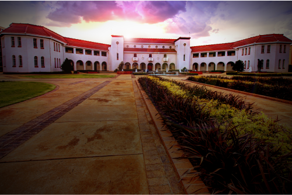
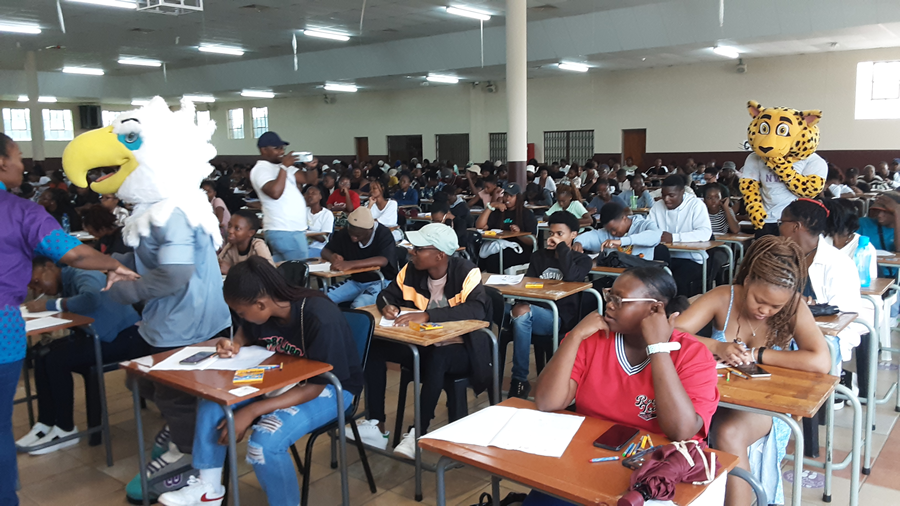
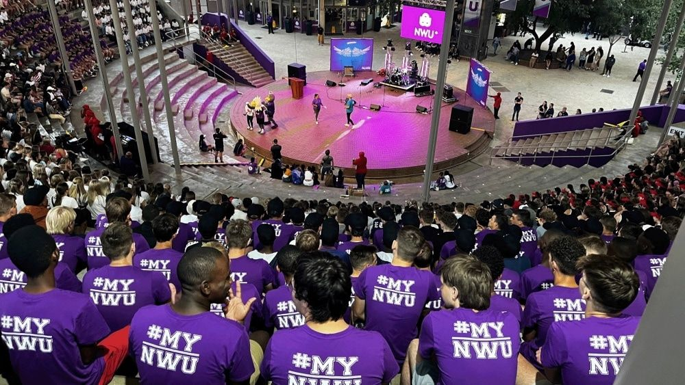

Your Campus.
Your Community.
A central hub for NWU students across all three campuses — resources, support, and connection in one place.
Est.
2004
NWU
A central hub for NWU students across all three campuses — resources, support, and connection in one place.
Experience life at NWU — Potchefstroom, Mahikeng, and Vanderbijlpark.


Select your campus to access tailored resources and community information.

The main campus of NWU, home to the majority of faculties and a vibrant student community in the North West Province.
 (1).jpg)
Located in the capital of the North West Province, this campus serves the local community with a strong focus on social development.
Situated in the Vaal Triangle, this campus offers engineering, commerce, and humanities programmes in an industrial hub.
Starting university is a big step. Here's what life at NWU looks like — and how we support you from day one.


University life is exciting but can feel overwhelming at first. The NWU Student Hub is here to help you navigate registration, find your classes, access financial support, and settle into campus life.
Use the student portal to complete registration before your deadline. Late registration attracts penalties.
All your course materials, assignments, and announcements live on eFundi — activate your account on day one.
Financial aid applications are time-sensitive. Visit the Financial Aid office on your campus for assistance.
Orientation week introduces you to campus life, societies, and services — don't skip it!


Jump straight to what you need most.
Library, eFundi, study guides
Mental health, counselling, safety
NSFAS, bursaries, fees info
Campus security, medical, crisis lines
Residence info, off-campus housing
Study spots, schedules, Wi-Fi zones
Common questions from NWU students across all campuses.
Visit efundi.nwu.ac.za and log in with your NWU student number and password. If you have login issues, contact your campus IT help desk.
NWU has a Student Counselling and Development service on each campus. Walk-ins are welcome, or visit the Wellbeing page for contacts per campus.
Applications open on nsfas.org.za. Ensure you have your ID, proof of income, and academic records ready. NWU's Financial Aid office can assist with queries.
Contact campus security immediately. Emergency numbers are available on the Contact page. For medical emergencies call 10177 or 112 from any phone.
The library and certain campus buildings have backup generators. Check our Load-Shedding Guide for a full list of powered study zones per campus.